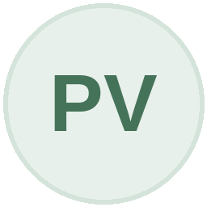
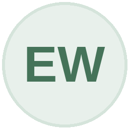
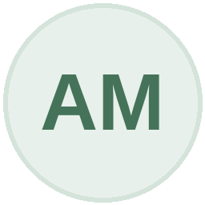

EkonoMap merupakan platform visualisasi data ekonomi Indonesia yang dirancang untuk membantu pengguna memahami perkembangan indikator ekonomi secara lebih sederhana dan informatif. Melalui penyajian data seperti Produk Domestik Bruto (PDB), inflasi, serta aktivitas ekspor-impor, EkonoMap menghadirkan informasi ekonomi dalam bentuk visual yang lebih mudah dianalisis dan dipahami.
Data yang digunakan dalam EkonoMap berasal dari sumber terpercaya untuk memastikan informasi yang disajikan tetap akurat dan relevan, yaitu:
- Badan Pusat Statistik (BPS)Menyediakan data statistik ekonomi nasional seperti PDB dan indikator makroekonomi.
- Bank IndonesiaMenyediakan data terkait inflasi dan indikator ekonomi moneter.
- World BankMenyediakan data historis ekonomi sebagai referensi perbandingan global.
EkonoMap dikembangkan menggunakan teknologi web modern untuk menghadirkan pengalaman visualisasi data yang interaktif dan responsif.
- FrontendHTML5, CSS3, dan JavaScript untuk membangun tampilan antarmuka.
- Visualisasi DataChart.js untuk menampilkan grafik dan informasi ekonomi secara interaktif.
- Backend & DatabaseSupabase untuk penyimpanan serta pengolahan data agar dapat ditampilkan secara dinamis.
- DeploymentSistem telah dipublikasikan melalui ekonomap.site agar dapat diakses online.
Dibangun oleh individu yang berdedikasi untuk menghadirkan data ekonomi yang informatif dan mudah dipahami.
Labadiya Tarapu

Putry Vi'azdha
Ahida Nasyiro

Emmanuella Winarto
